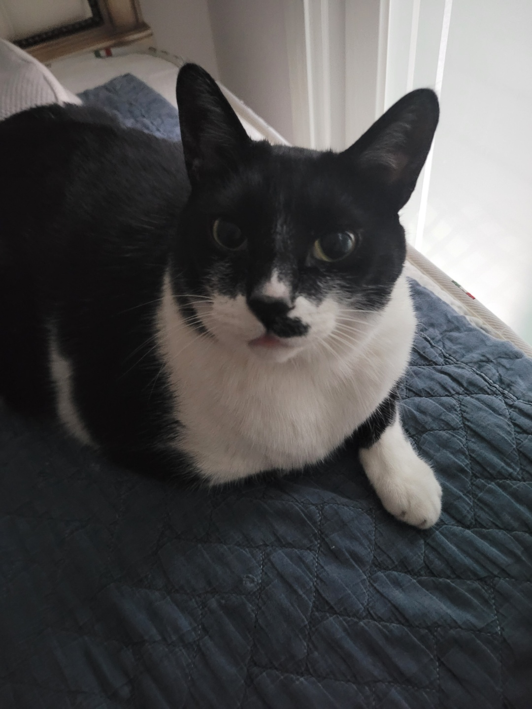

아꿍은 정말 동그란 고양이입니다. 거대 고양이 중에서 가장 거대한 고양이 1위에 일찌감치 자리매김한 그는 이제 명실상부한 세상에서 가장 귀여운 고양이, WBCC의 일원입니다. 화려한 수상경력을 자랑하는 아꿍은 이미 가장 별명이 많은 고양이 1위, 가장 엉덩이가 푸짐한 고양이 1위 등 여러 주요 스코어에 자리매김하며 세간에서는 이미 올해 가장 주목할만한 WBCC로 꼽혔습니다.
저명한 고양이 엉덩이 평론가는 아꿍의 아기 시절을 보고 '너무나 귀여운 고양이가 되겠군.'하며 그의 미래를 예언하였습니다. 그리고 정말 완전 동그랗고 말랑하고 귀여운 고양이가 되었습니다.